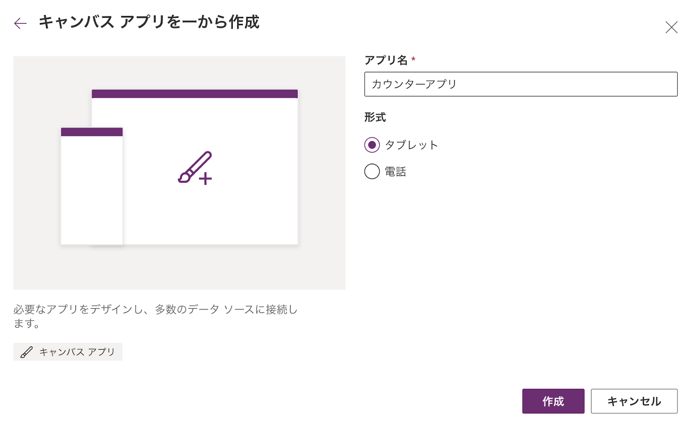

この手順はKTL Learn 「はじめてのPower Apps」にて使用するハンズオン手順です。
この手順は公開しますので復習や展開し自由に使って頂いて構いません。
事前にアイコン画像をデスクトップ等にダウンロードしておくこと
- Microsoft365を開く
- 画面左上のアプリ起動ツール(9つの点のアイコン)を選択
- SharePointを選択
- 新しいタブが開き、SharePointのホーム画面が表示される
- 画面右上の「サイトの作成」を選択
- サイトの種類として「チームサイト」を選ぶ
- サイト名を「KTLハンズオンXXXXXX」※XXXXXXは職員番号 と入力
- プライバシーの設定は「プライベート」のまま、言語設定を「日本語」に変更し「次へ」を選択
- メンバーは追加せず「完了」を選択
- サイトが作成される
- 「新規」→「ドキュメントライブラリ」を選択
- ドキュメントライブラリの名前を「KTLライブラリXXXXXX」※XXXXXXは職員番号 と入力
- 「作成」を選択し、空のドキュメントライブラリを作成する
- Power Appsを開き、「空のアプリ」を選択
- 「空のキャンバスアプリ」の「作成」ボタンを選択
- アプリ名欄には「写真投稿アプリ」と入力。
形式欄はPCやタブレットで動かす想定の場合は「タブレット」を、スマートフォンで動かす想定の場合は「電話」を選択。

- 「作成」を選択し暫く待つとアプリ作成画面に遷移する
- 「Power Apps Studioへようこそ」という画面が表示された場合は「スキップ」を選択
- 保存をするため、画面右上のフロッピーディスクアイコンを選択
- アプリ名は最初に設定しているので、変更がなければそのまま「保存」を選択
- メニューバーの「挿入」→「ボタン」を選択
- ボタンをドラッグ&ドロップで画面中央からやや下付近に移動し、大きさを調整
- プロパティの「テキスト」の欄に「撮影」と入力、フォントサイズの欄を「40」に変更
- 1.〜3.で作成したボタンを選択した状態から右クリックし「コピー」を選択
- 選択状態を外し再び右クリックし「貼り付け」を選択
これによりボタンが複製される - 複製したボタンのプロパティの「テキスト」の欄に「投稿」と入力

- メニューバーの「挿入」→「メディア」を選択。「メディア」の配下の部品群の一覧が表示されるので「画像」を選択
- 挿入された画像エリアを画面の左上端から撮影ボタンの上付近の右端までドラッグ&ドロップで拡大
- メニューバーの「挿入」→「テキスト ラベル」を選択
- 挿入されたテキストラベルを投稿ボタン下まで移動
- 幅を両端まで広げる
- プロパティにて以下のとおり設定
フォントサイズ → 30
テキストのアラインメント → 左右中央揃え
高さの自動調整 → オン
(文字)色 → 赤 - 数式バーに『「Text」=「ResultInfo」』と入力
※ResultInfoは投稿完了時に表示するメッセージを格納する変数(後の工程で設定) - ツリービューの各部品の名称を以下のとおり変更する
「Screen1」→「登録画面」
「Label1」→「投稿結果表示ラベル」
「Image1」→「画像」
「Button1」→「カメラ起動ボタン」
「Button1_1」→「投稿ボタン」 - 画像(14.でImage1から名前変更したもの)を選択
- 数式バーの『「Image」=「SampleImage」』を『「Image」=「CameraImage」』に変更
※予め設定されている変数SampleImageは使用できないので必ず異なる変数に変更しておく - カメラ起動ボタンを選択
- 数式バーのプロパティのリストから
OnSelectを選択した後、数式バーに以下の関数を入力(コピペ可)
※ここでは13.で設定した変数ResultInfoを空にしたうえで「撮影画面」(後に設定)に移動するという内容になっている
Set(ResultInfo,""); Navigate(撮影画面)
- 投稿ボタンを選択
- 数式バーのプロパティのリストから
OnSelectを選択した後、数式バーに以下の関数を入力(コピペ可) ※関数の解説は後述
撮影画像保存.Run(
Text(Now(),"yyyymmddhhmmss")&".jpeg",
{
file:{
contentBytes: CameraImage,
name: Text(Now(),"yyyymmddhhmmss")&".jpeg"
}
}
);
Set(ResultInfo,"投稿が完了しました");
- 関数入力を終えるとボタンの左上付近にエラーがある旨が表示されるが、後続の作業を行うことで解消されるため、ここでは一旦無視する
- ツリービューの「登録画面」の右側の3点リーダ(「...」のアイコン)を選択し、「画面の複製」を選択し、トップ画面の複製を作成する
- メニューバーの「挿入」→「カメラ」を選択
- 画像_1と重なるよう大きさを調整
- 数式バーのプロパティの一覧から「StreamRate」を選択
- 数式バーの値を「100」に変更
※StreamRateはカメラ画像を更新する頻度 (ミリ秒単位) - 投稿結果表示ラベル_1、画像_1は不要なため、各部品の3点リーダーから「削除」
- ツリービューの各部品の名称を以下のとおり変更する
「登録画面_1」→「登録画面」
「Camera1」→「カメラ」
「投稿ボタン_1」→「戻るボタン」
「カメラ起動ボタン_1」→「撮影ボタン」 - 戻るボタンのテキストを「戻る」に変更
- 撮影ボタンを選択
- 数式バーのプロパティのリストから
OnSelectを選択した後、数式バーに以下の関数を入力(コピペ可)
※ここでは先に設定した変数CameraImageにカメラで撮影した画像をセットした後、登録画面に遷移するよう設定している
Set(CameraImage,カメラ.Stream); Navigate(登録画面)
- 戻るボタンを選択
- 数式バーのプロパティのリストから
OnSelectを選択した後、数式バーに以下の関数を入力(コピペ可)
※登録画面に遷移するよう設定
Navigate(登録画面)
ここからは、登録画面の「保存」ボタンが押された時の動作として、撮影した写真をSharePointに保存する機能をPower Automateで作成する。
- この時点で一度写真投稿アプリを保存する
- Power Appsの画面左上のアプリ起動ツール(9つの点のアイコン)を選択
- Power Automateを選択すると別タブが開きPower Automateのホーム画面が開く

- 左側のメニューから「マイフロー」を選択
- マイフロー画面の上部「新しいフロー」を選択
- 「インスタント クラウド フロー」を選択
- トリガー(きっかけ)を選択する画面が表示されるため、「PowerApps(V2)」にチェックを入れ「作成」を選択
※「PowerApps」ではなく必ず「PowerApps(V2)」を選択すること - フロー作成画面が表示される
- 画面上部やや左側の「無題」と書いているのがフローの名前となる。この「無題」を選択すると編集ができるため「撮影画像保存」と設定
- 画面中央「PowerApps(V2)」と書かれている部分(「ステップ」という)を選択
- 画面が広がり「入力の追加」と表示されるので、それを選択
- 6つ選択肢が表示されるので、まずは「テキスト」を選択
- 続いて再び「入力の追加」を選択し、「ファイル」を選択
- 設定画面にて、テキストの方の「入力」となっている箇所を「ファイル名」に変更
- PowerApps(V2)のステップの下に表示されている「新しいステップ」を選択
- トリガーを受けての動作(「アクション」という)を設定する画面が開く
- 検索欄に「sharepoint」と入力すると、検索欄直下にSharePointのアイコンが表示されるので、それを選択
- SharePointでできることが一覧で表示される。これを絞り込むため検索欄に「ファイルの作成」と入力
- 「ファイルの作成」のアクションが表示されるため、これを選択
- アクションの設定画面が開くので順に設定していく
①サイトのアドレス → 入力欄にカーソルを合わせるとサイトの候補の一覧が表示されるので、冒頭に作成したSharePointのサイト名(KTLハンズオンXXXXXX」※XXXXXXは職員番号)を選択
※もしサイト名の候補が出てこなかった場合は、SharePointの当該サイトを開き、そのURLを直接貼り付ける
②フォルダのパス → フォルダアイコンを選択するとSharePointサイト内のフォルダの一覧が表示されるので、冒頭に作成したSharePointのドキュメントライブラリ名(「KTLライブラリXXXXXX」※XXXXXXは職員番号)のフォルダアイコンを選択
③ファイル名 → 入力欄にカーソルを置くと、ここに入る可能性のある候補の一覧が表示される。ここから「ファイル名」を選択(14.の変更作業はここの選択を容易にするため)
④ファイル コンテンツ → ファイル名同様、入力欄にカーソルを置き、表示された一覧から「ファイル コンテンツ」を選択 - ステップの下もしくは画面右上にある「保存」を選択しフローを保存する
- Power Appsのアプリ作成画面に戻る
- 左側のメニューから「Power Automate」を選択
- 「フローの追加」を選択
- Power Automateで作成した「撮影画像保存」フローを選択
フローの候補にない場合は、フロー追加画面右側の3点リーダー(「...」のアイコン)→「最新の情報に更新」を選択すると、フローの候補が更新され「撮影画像保存」フローが表示される
- 写真投稿アプリと連携したPower Automateフローとして「撮影画像保存」フローが追加される
- それと同時に投稿ボタンに表示されていたエラーマークが消える
(投稿ボタンのOnClickプロパティに設定していた関数で「撮影画像保存」フローを指定していたため)
- メニューバーの「設定」を選択
- 表示された設定画面のアイコンの項目横の「+画像を追加する」を選択
- 画像選択画面からハンズオン冒頭にダウンロードしたアイコン画像を選択
これによりアプリにアイコンが設定される - 設定画面を閉じる
- 写真投稿アプリを保存
- 保存ボタンの右側の「公開」ボタンを選択し、アプリを公開
ここではスマートフォンアプリで動作確認を行う。
- スマートフォンアプリを開きサインインする
- すべてのアプリから作成した「写真投稿アプリ」を選択する
- 画面上部に最新のバージョンがある旨が表示された場合はそこをタップ
- 以下のとおり正しく動作することを確認する
①「撮影」ボタンを選択
※カメラの許可を尋ねられたら「許可する」を選択
②カメラが起動するので再び「撮影」ボタンを選択
③撮影した画像が表示されるので、それでよければ「投稿」ボタンを、もう一度撮影する場合は「撮影」ボタンを選択
④「投稿」ボタンを選択した場合は少し時間を置いた後「投稿が完了しました」と表示される
⑤SharePointのドキュメントライブラリに投稿された写真のファイル名が表示されていることを確認する
⑥ファイル名を選択すると投稿された画像が表示される